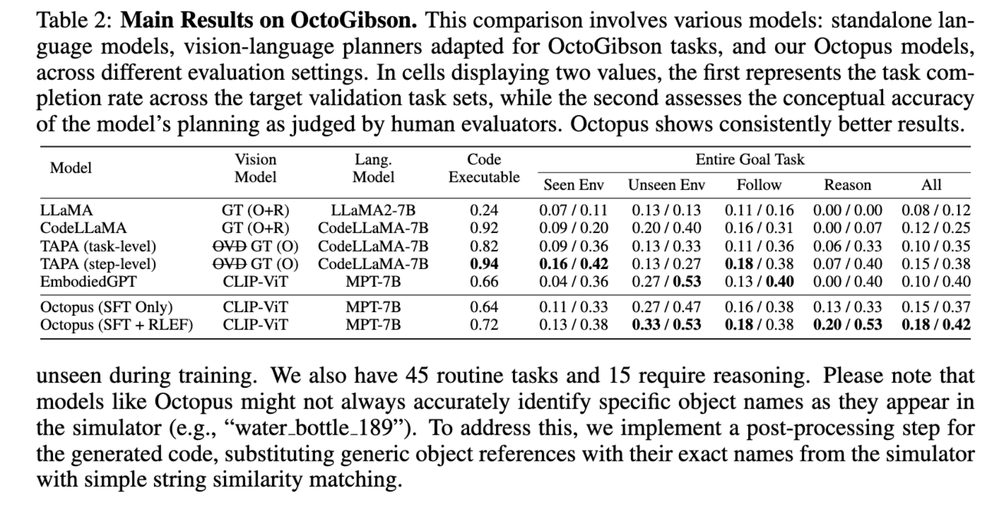

Results


The fusion of vision and language in recent vision-language models (VLMs) represents a significant advancement in multimodal comprehension and interpretation. Furthermore, when seamlessly integrated into an embodied agent, it signifies a crucial stride towards the creation of autonomous and context-aware systems capable of formulating plans and executing commands with precision. In this paper, we introduce Octopus, a novel VLM designed to proficiently decipher an agent's vision and textual task objectives and to formulate intricate action sequences and generate executable code. Our design allows the agent to adeptly handle a wide spectrum of tasks, ranging from mundane daily chores in simulators to sophisticated interactions in complex video games. Octopus is trained by leveraging GPT-4 to control an explorative agent to generate training data, i.e., action blueprints and the corresponding executable code, within our experimental environment called OctoVerse. We also collect the feedback that allows the extra training scheme of Reinforcement Learning with Environmental Feedback (RLEF). Through a series of experiments, we illuminate Octopus's functionality and present compelling results, and the proposed RLEF turns out to refine the agent’s decision-making. By open-sourcing our model architecture, simulator, and dataset, we aspire to ignite further innovation and foster collaborative applications within the broader embodied AI community. The codebase is released at https://github.com/dongyh20/Octopus.
@inproceedings{Sung2023ECoFLaP,
author = {Yi-Lin Sung, Jaehong Yoon, Mohit Bansal},
title = {Octopus: Learning Embodied Vision-Language Programming from Environmental Feedback},
booktitle = {arXiv:2310.02998},
year = {2023},
}